ConcertAI · Acabamentos de UX
T826 · 17/11/2026 · 10 itens
O que foi feito
Como usar
Pra que serve
Item por item (antes × depois)
1Detalhe do pedido em 2 colunas no PC
Hoje: Uma coluna só, com muito espaço vazio.
O que muda: Andamento e fotos à esquerda; contato, detalhes e total à direita. No celular continua uma coluna, na mesma ordem.
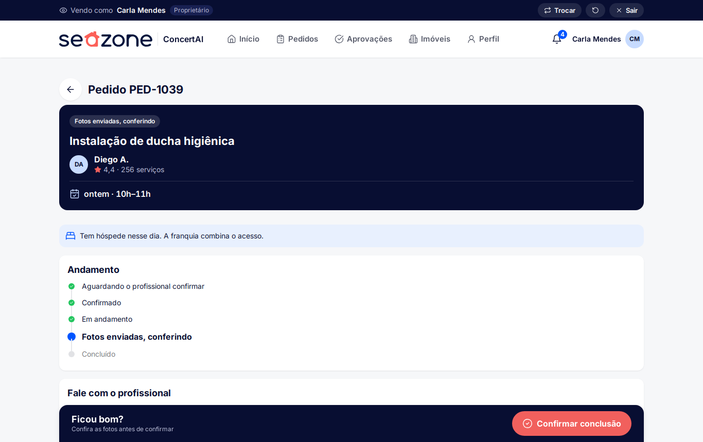
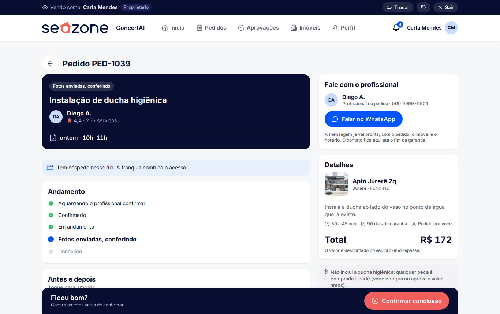
2Topo do proprietário sem buraco à direita
Hoje: Metade direita do topo vazia no PC.
O que muda: Resumo do imóvel à direita: próxima visita, pedidos para aprovar e as 3 garantias. No celular não aparece (o mesmo conteúdo vem logo abaixo).
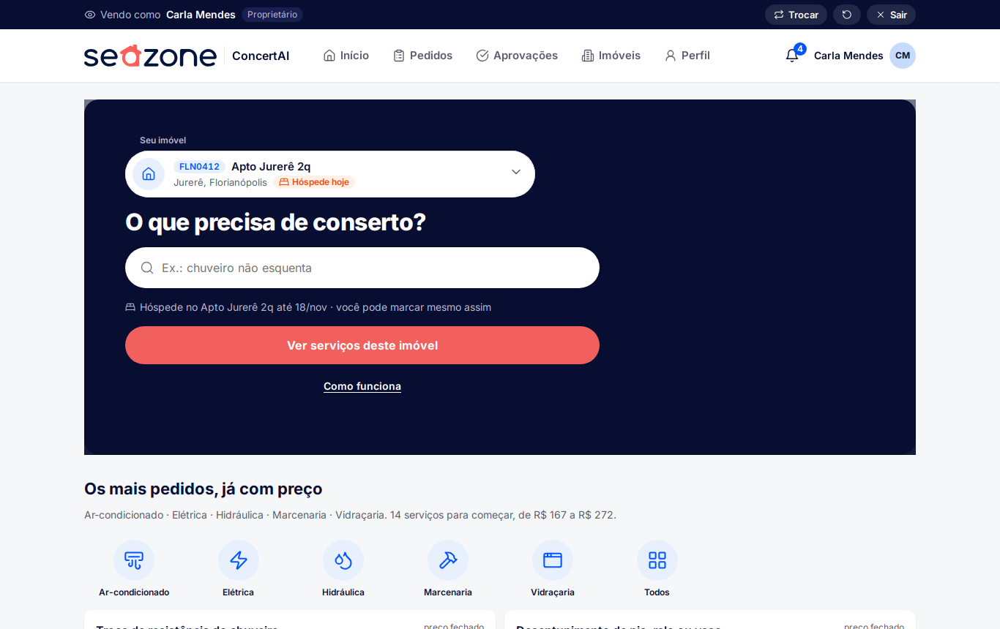
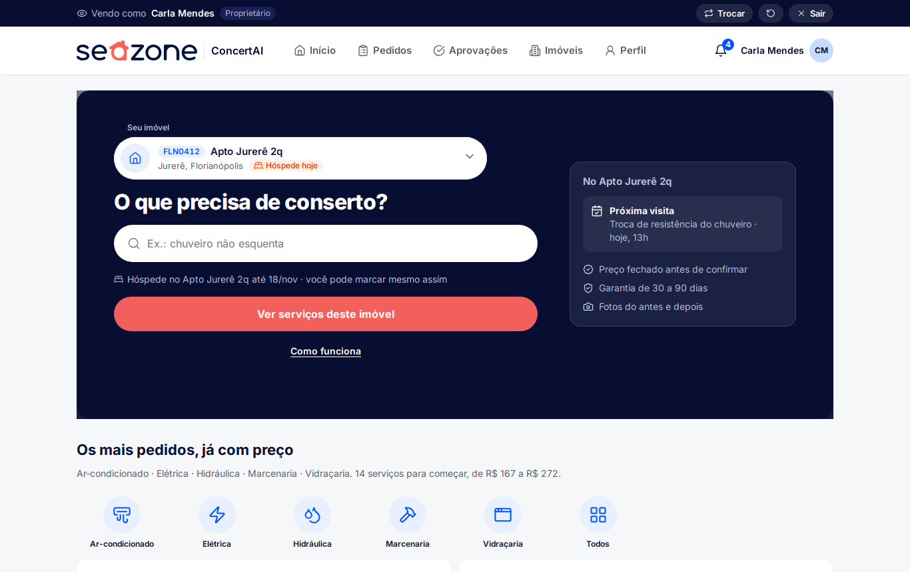
3“Ver como” não cobre mais o conteúdo
Hoje: A pílula flutuante já tinha virado faixa no topo (PR #106).
O que muda: Conferido que a faixa não cobre nada, ao rolar inclusive; o código velho da pílula foi apagado.
4Login com volta para o site
Hoje: Sem link para voltar à página de visita.
O que muda: “Voltar ao site” no topo do cartão e a marca ConcertAI também leva de volta.
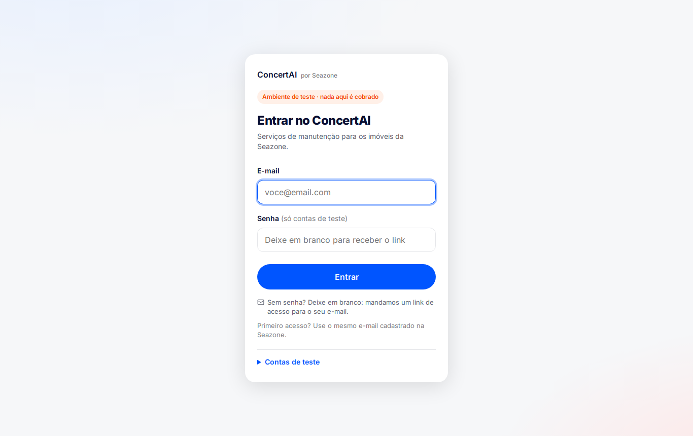
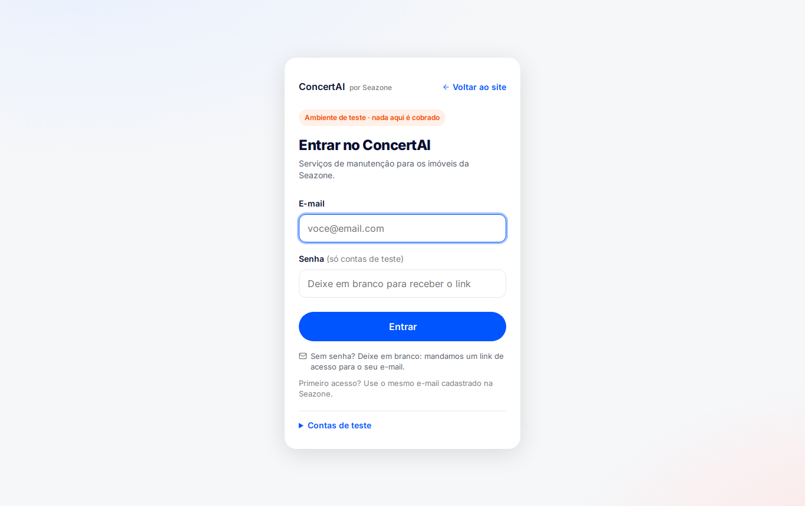
5Prestador troca a foto do perfil
Hoje: Só as iniciais.
O que muda: Botão “Pôr foto / Trocar foto / Tirar”. A foto é reduzida no celular antes de enviar e aparece na vitrine.
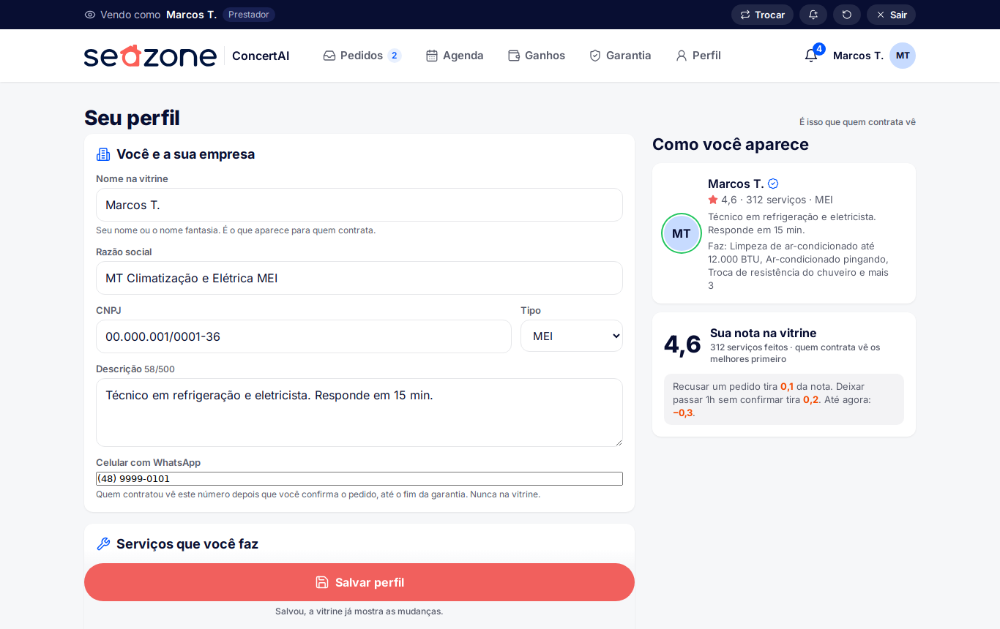
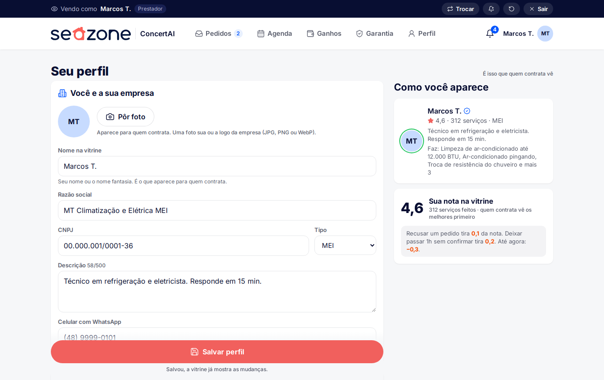
6Perfil do prestador com todos os serviços
Hoje: Só os 14 do Lote 1.
O que muda: Os 102 serviços; os 88 do Lote 2 aparecem como “Em breve”, sem dar para marcar.
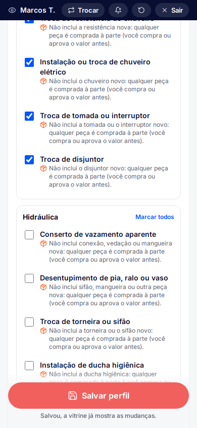
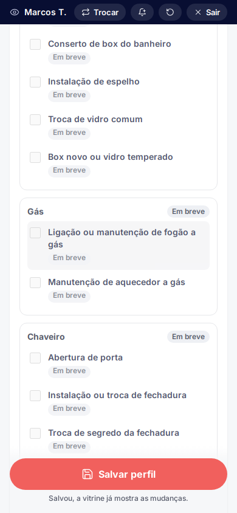
7Pedido expirado avisa sem precisar abrir
Hoje: O aviso só aparecia ao trocar de tela.
O que muda: O sino se atualiza sozinho (a cada 30 s) e mostra um aviso na tela. No print: o pedido passou de 1h sem confirmação e o sino foi de 4 para 5 sem navegar.
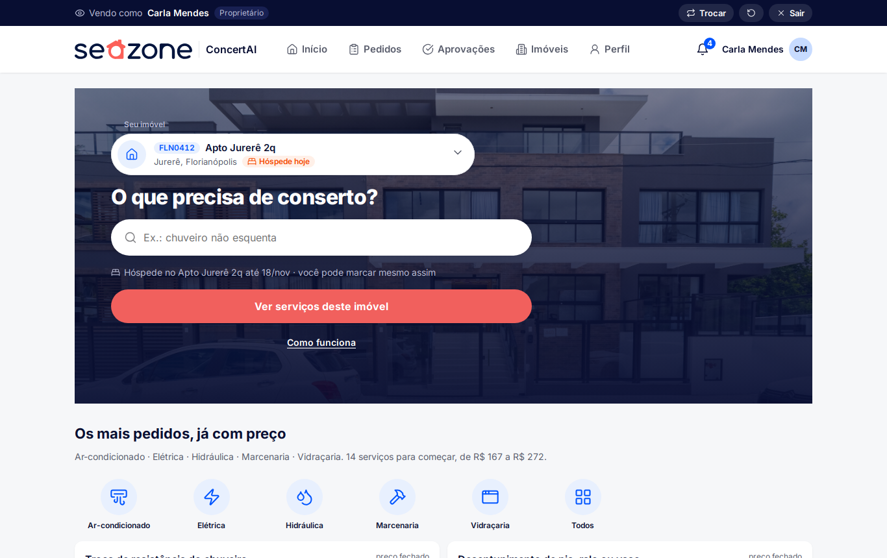
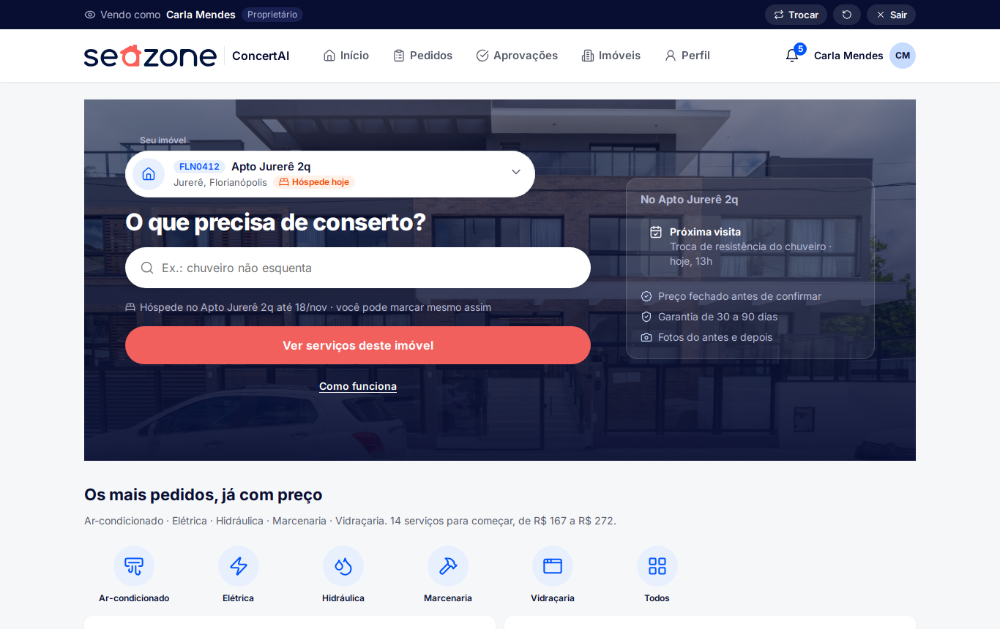
8WhatsApp segue a garantia de cada serviço
Hoje: A regra nova estava no código, mas não no banco (90 dias fixos).
O que muda: Aplicada no banco: 90 dias para conserto e instalação, 30 para limpeza e desentupimento.
9Franquia ganhou a aba Perfil
Hoje: Sem aba Perfil.
O que muda: Aba Perfil com o WhatsApp da franquia (o número que o profissional usa) e os dados básicos.
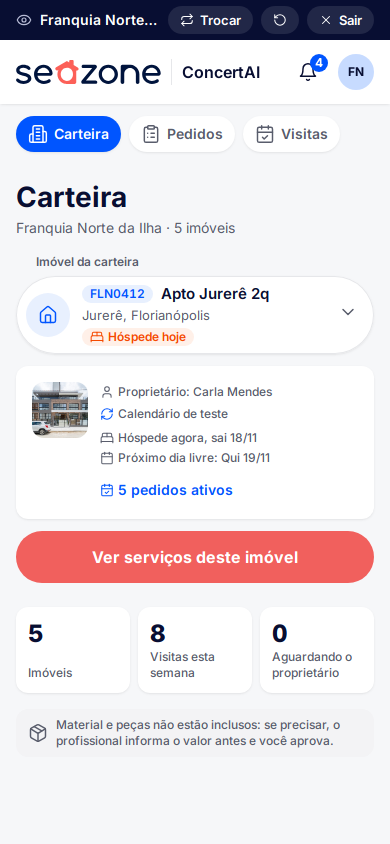
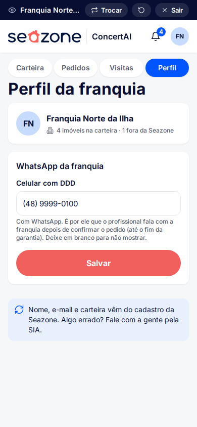
10Proprietário: celular explicado
Hoje: “Para o WhatsApp da SIA.”
O que muda: “Com WhatsApp: é por ele que o profissional fala com você depois de confirmar o pedido.”
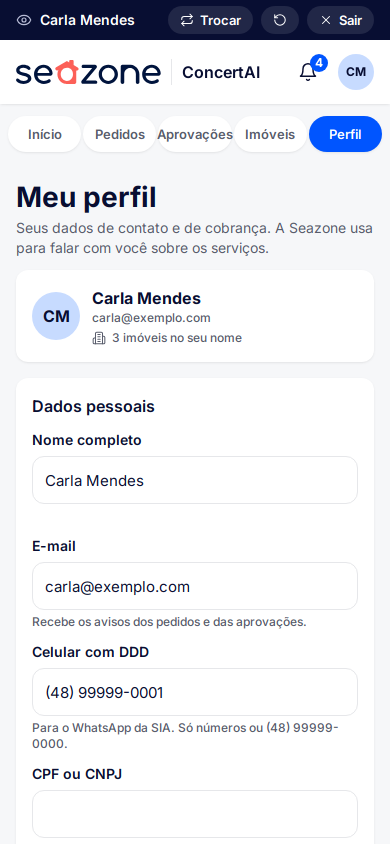
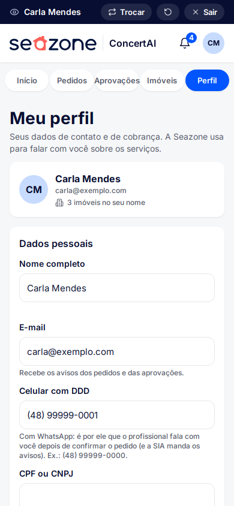
Links
Site: https://seazone-tech.github.io/concertai/